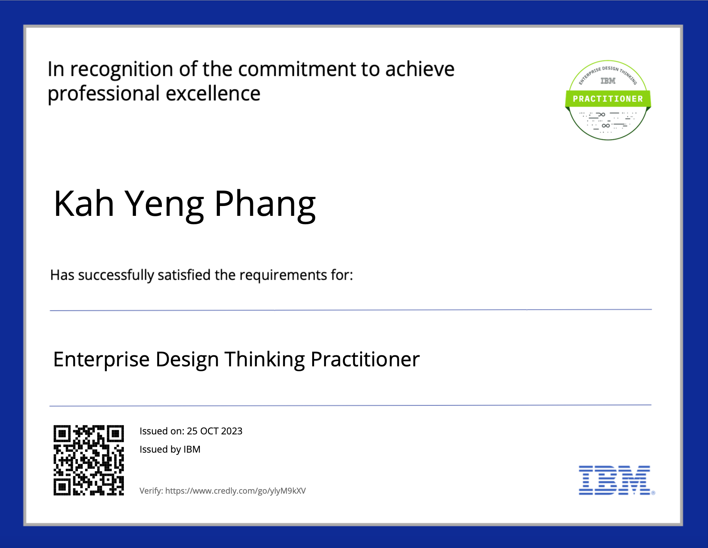

Sponsored by AIDC, a challenge statement to deal with a real-life problem to collect data through the recording of employees' attendance was given to us right in the first week of this semester. With a group of four persons, we first started doing some background research of the company to understand what improvements we could do with their product. The idea of deploying face recognition crossed everyone's mind as the most suitable solution since our approach to design strategy and the structure of project developments will be enhanced by Sprint and Scrum that we've just been made familiar with this week.
In dealing with our project challenge, we've been made clear that Sprint and Scrum will help us immensely and change how ideas are transformed into a reality in the future. While Scrum is highly regarded as an indispensable method in project management with structured-approach supports for organising and managing work utilising features like Sprints, daily stand-ups, and regular reviews, Sprint stresses its focus on convergent efforts within specific timeframes that completely match our goal where current challenge can efficiently be addressed. As complexities of our current challenge can then easily and efficiently be navigated, subsequent future projects with its focus on execution and delivery phases are also secured thanks to the existence of Sprint and Scrum.
OAL Material

Last week, right after the IBM Enterprise Design Thinking for Practitioner was achieved, I gained a more thorough understanding of the professional design language, where every symbol in the design process combined with progressive thinking and in-depth understanding provide a nuanced significance, Assessing the real cause of the problem expressed in a problem statement helps us stay objective within the path of the solution. Therefore, prior to starting our project, a number of background research of the company was conducted through which we were then able to have a better insight, provide a bespoke and thorough solution and sympathy for our client, that works seamlessly with their unique needs.